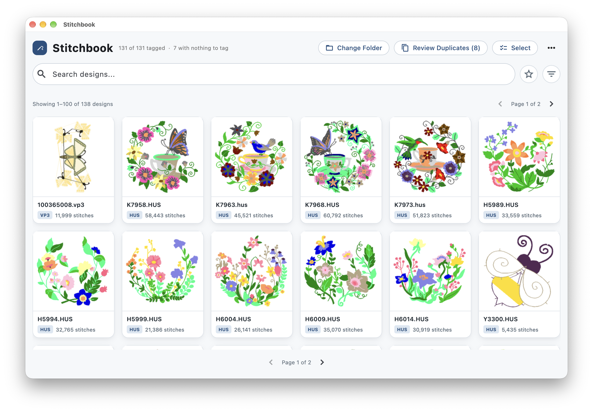
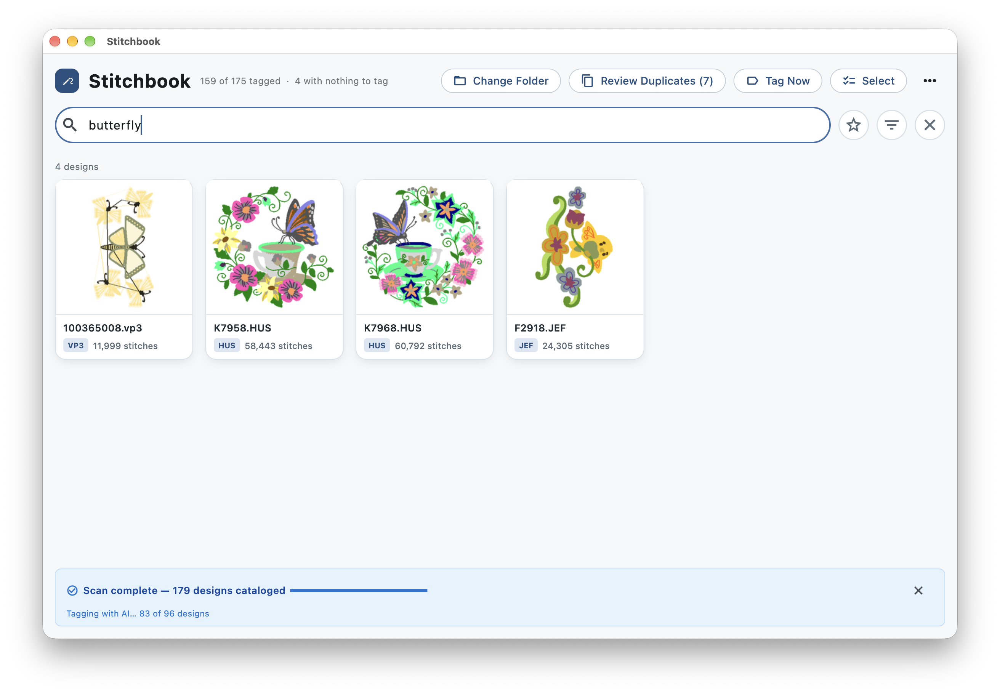
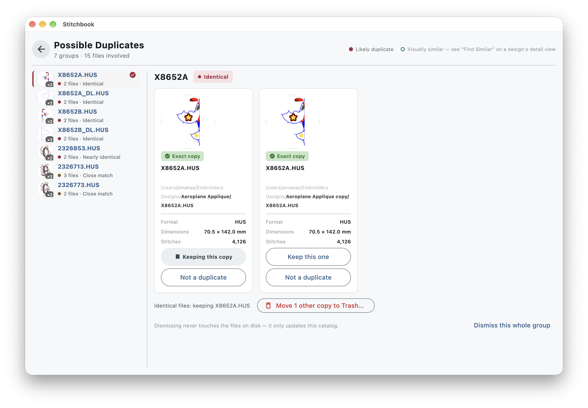
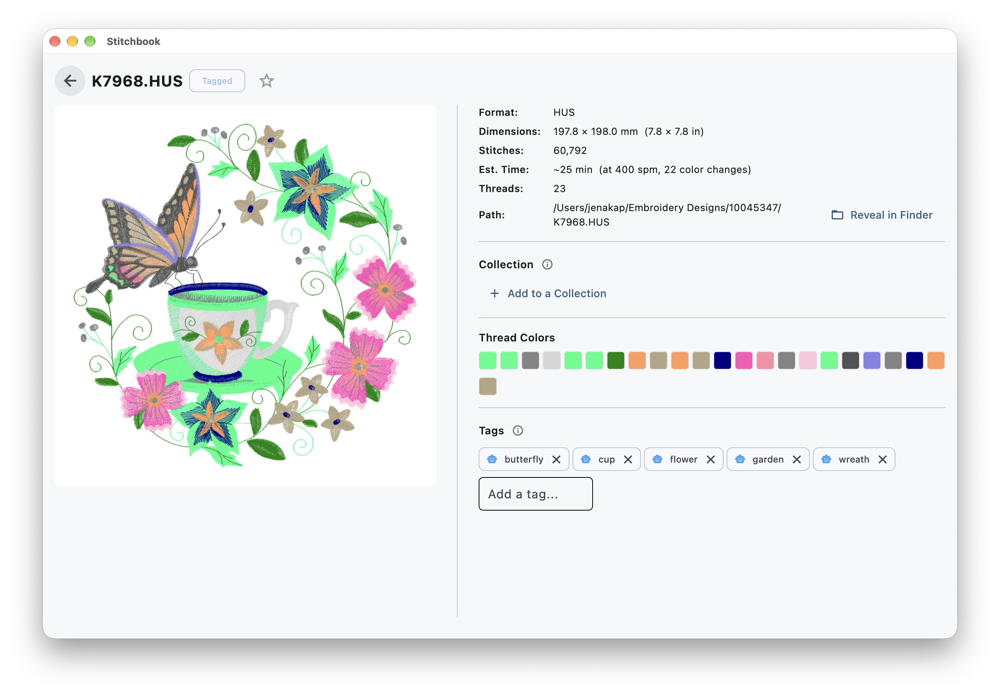
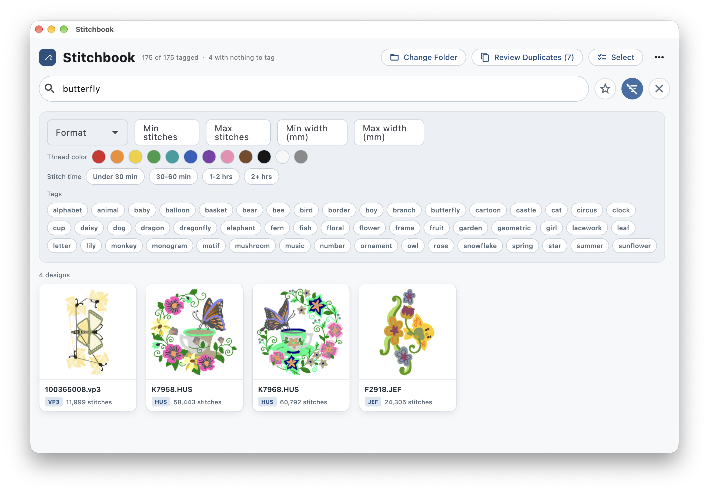
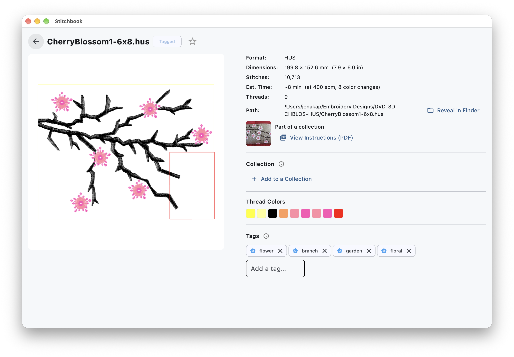

Stop digging through embroidery files to see what's inside them.
Stitchbook catalogs your embroidery designs (.hus, .vp3, .shv, .pes, .dst), generates real previews, and gives you a visual, searchable library — instead of a folder of cryptic filenames.
Free during beta · macOS only for now

If you embroider, you know the drill: a folder full of files named
btrfly_4x4_v2.pes and no way to tell what's actually in
them without opening each one. Stitchbook scans your folder once,
renders a real preview of every design, and lets you browse, search,
and find duplicates the way you'd browse photos — not files.
What it does
The core of Stitchbook — point it at a folder, and it takes care of the rest.

Visual catalog
Every design gets a real rendered preview — filename, format, and stitch count at a glance. Search and filter instead of opening files one by one.

Duplicate detection
Perceptual-hash matching flags likely duplicates so you can clean up a messy library without guessing which file is the "real" one.

AI-based tagging
Designs are automatically tagged by subject matter — flower, butterfly, animal, and more — so searching "butterfly" finds every butterfly design, not just ones with "butterfly" in the filename.

Filter by color, time, and tags
Narrow a search by more than a filename — thread color, estimated stitch-out time, size, format, and the full tag vocabulary — so you can find the right design for a project, not just a design you remember the name of.

Collections, with instructions included
When a design belongs to a multi-file collection with a PDF instruction sheet, Stitchbook links straight to it — and indexes the PDF's text, so it turns up in search too.
What's new
Stitchbook is actively being built — here's what's shipped recently.
- Favorite your go-to designs for quick access, with a dedicated Favorites view
- Search by thread color, not just filename or tags
- Filename search now understands real keywords (camelCase, separators) instead of matching raw filenames
- Filter by stitch-out time to find quick projects
- Text from collection/pack PDFs is now searchable alongside your designs
What "beta" means right now
Stitchbook started as a project for my mom, and I'm opening it up to a small group of beta testers before it's more broadly ready. A few things to know going in:
- macOS only for now — no Windows version yet.
- You may hit rough edges. I'm actively fixing things as they come up.
- Your files never leave your Mac — scanning, previews, and search all run locally. The one exception is optional AI tagging, which sends a design's image to a hosted service if you turn it on.
- Beta builds aren't on the Mac App Store — you'll install directly from a download I send you.
Join the beta
Leave your email and I'll follow up with a download link and instructions.
Opens a short Google Form in a new tab. No spam — just beta updates.
Questions
Is it free?
Yes, free during the beta.
What does it do with my files?
Scanning, previews, search, and duplicate detection all run locally on your Mac — your design files never leave your machine for those. The one exception is AI tagging, which is optional: if you turn it on, a design's image is sent to a hosted tagging service to generate subject tags.
What file formats are supported?
.hus, .vp3, .shv, .pes, and .dst today.
What Mac do I need?
Details on supported macOS versions will come with your beta invite — reach out if you're not sure yours qualifies.
Will there be a Windows version?
Not currently planned, but if there's enough interest I'll reconsider.